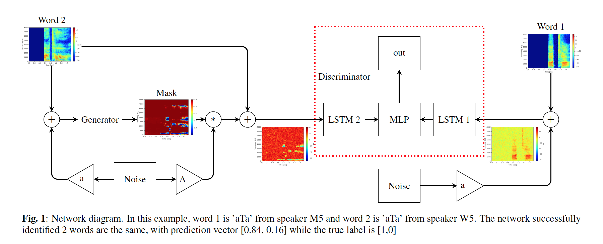

Bubble cooperative networks for identifying important speech cues
Predicting the intelligibility of noisy recordings is difficult and most
current algorithms treat all speech energy as equally important to intelligibility.
Our previous work on human perception used a listening
test paradigm and correlational analysis to show that some energy
is more important to intelligibility than other energy and that the
audibility of certain regions containing no speech energy at all can be
important for correctly identifying certain words. In this paper, we
propose a system called the “Bubble Cooperative Network” (BCN),
which aims to predict important areas directly from clean speech.
Given such a prediction, noise is added to the utterance in unimportant
regions and then presented to a recognizer. The goal of the BCN
is to add as much noise as possible without affecting recognition performance,
encouraging it to identify important regions precisely. Our
results show that this is possible for a simple speech recognizer that
compares a noisy test utterance with a clean reference utterance. The
predicted masks show patterns that are similar to analyses derived
from human listening tests, but with better generalization and less
context-dependence than previous approaches.
